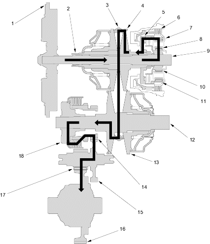

 |
- FLYWHEEL
- DRIVE PULLEY SHAFT
- STEEL BELT
- DRIVE PULLEY
- FORWARD CLUTCH
- REVERSE BRAKE
- PLANETARY CARRIER
- PINION GEAR
- INPUT SHAFT
- SUN GEAR
- RING GEAR
- DRIVEN PULLEY SHAFT
- DRIVEN PULLEY
- SECONDARY DRIVE GEAR
- SECONDARY DRIVEN GEAR
- FINAL DRIVEN GEAR
- FINAL DRIVE GEAR
- START CLUTCH
|
 Position (Reverse Range)
Position (Reverse Range)